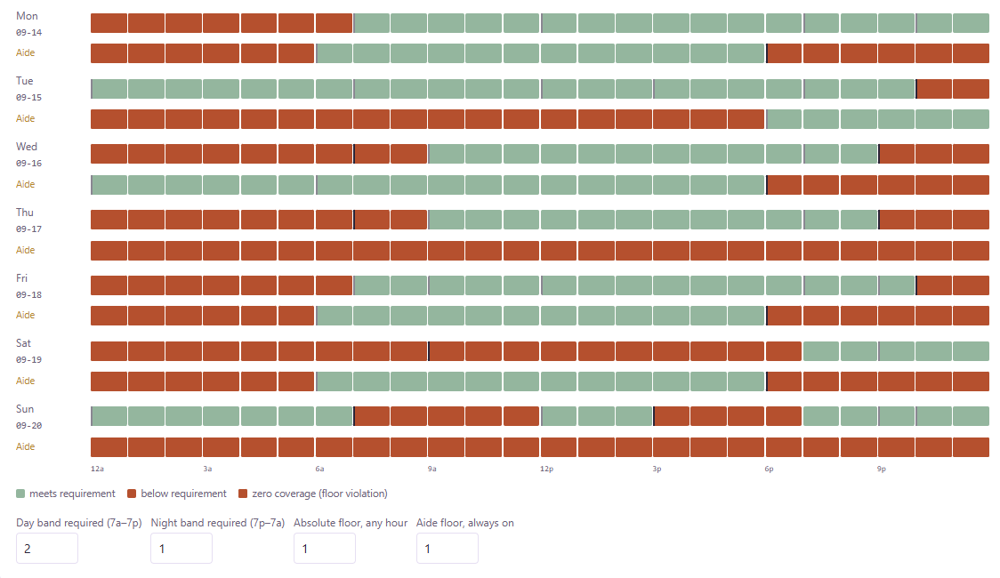

I build software that turns a company's fragmented internal data into a model people can actually act on. I'm the founder of Whis LLC, where I own the full lifecycle of that work: architecture, engineering, cloud infrastructure, and the client relationship, for a live enterprise client.
Before founding Whis, I spent two years as a healthcare regulatory consultant, where I taught myself an unfamiliar, multi-jurisdictional compliance landscape from scratch and used it to lead market-entry strategy presented directly to C-suite leadership. I currently work as a psychiatric aide at an acute inpatient hospital, where I identified a scheduling and fairness problem in the unit I work in and am independently building an MVP to fix it, unprompted.
The pattern across all of it: dropped into a domain with no formal training and no playbook, I find a way to build something real. Where that goes next, a law degree focused on policy, or the next company, is still an open question.
Founded and run a software company solo, owning product, engineering, infrastructure, and the client relationship end to end. Building Omni Prospect, a commercial intelligence platform, for a manufacturing holding company as first customer.
Source 1 is a Pittsburgh-based compliance and revenue integrity consulting firm serving healthcare providers ranging from small physician practices to large health systems. As Consultant and Client Lead, I served as the primary regulatory subject matter expert across a portfolio of 10+ clients, managing engagements end-to-end and presenting findings directly to C-suite and board-level leadership.
Direct patient care in an acute inpatient psychiatric setting, with firsthand exposure to how payer constraints, prior authorization, and formulary decisions affect medication access and care delivery at the point of service. Identified a recurring scheduling and fairness problem in the unit and independently began building an MVP tool to address it (see Projects).
Relevant coursework: Neuroscience, Organizational Psychology, Healthcare Strategic Management and Policy, Cognitive Psychology
Whis helps companies build a usable, company-owned picture of their business. We connect fragmented internal data (ERP, CRM, quoting tools) with researched external evidence, resolve it into a consistent model of customers, sites, programs, people, and relationships, and use that model to put specific, explained recommendations in front of the people responsible for acting on them. The underlying model belongs to the client, not to me.
I lead product and technical delivery end to end: working with client stakeholders on requirements and data definitions, designing the architecture, building the application, reviewing every implementation change, and managing deployment. I'm currently leading its migration into the client's private Google Cloud environment to support direct BigQuery integration.
A recurring scheduling and fairness problem in the 24-hour psychiatric emergency unit I work in. Nobody asked me to fix it, so I'm building an MVP on my own time, alongside a full patient-care caseload. A fairness-scoring engine weighs call-offs, picked-up shifts, and PTO concessions; an AI-driven schedule generator supports fully custom per-nurse shift start and end times instead of fixed blocks.
Currently a static site running on simulated data, with a database layer planned as the tool matures.

Working in healthcare compliance, I spent a disproportionate amount of time just staying current: scanning OIG enforcement actions, Federal Register notices, new CMS rules, FDA actions, and congressional activity across a dozen sources, for a dozen clients. The manual overhead was real. I'd spend hours each week sorting through noise to find the two or three things that actually mattered to a specific client in a specific regulatory context.
So I built infrastructure to do that automatically. A pipeline pulls from 30+ government APIs and industry feeds every Monday, uses a language model to classify urgency and synthesize the implications for two distinct audiences (compliance and strategy professionals, and policy readers) and publishes a structured briefing as a static site. Zero manual effort after setup. The dashboard I wished had existed when I needed it most.
A personal project I took on out of curiosity. The 2025 reconciliation law reshaped how Medicaid gets financed by phasing down the provider-tax ceiling, adding work requirements, and squeezing optional benefits. I wanted to understand which states were most exposed and by how much, so I set out to answer that question the way a research associate on a state-Medicaid policy team would: with the public federal datasets, not punditry.
The mechanical part of that work is the same grind every time, so I built an analyst workbench to automate it: fetch, clean, compute, chart, and draft. It ingests CMS-64, managed-care, Census coverage, and KFF policy data into one analysis-ready panel and runs four financing analyses: provider-tax cap exposure, an HCBS vulnerability index, work-requirements coverage loss, and dual-eligible spending concentration. A language model drafts each finding in a tell / show / so-what structure, and every draft ships with a claims-to-verify checklist, because the tool runs the arithmetic but the analyst owns every published conclusion.
Applying quantitative methods (SQL, Python, and public datasets) to messy regulatory and claims data to surface patterns that hold up to scrutiny. The subject is healthcare; the analytical approach travels to any data-heavy, regulated field.
Structured arguments about how rules actually work versus how they're meant to: incentive analysis, regulatory critique, and the gap between policy intent and outcome. The reasoning transfers directly to legal, policy, and strategy work.
Analytical writing beyond the day job: political theory, institutions, and how people organize. A look at how I think when the subject isn't healthcare.
Whether you're interested in what I'm building, exploring a collaboration, or want to talk healthcare policy, I'd like to hear from you.